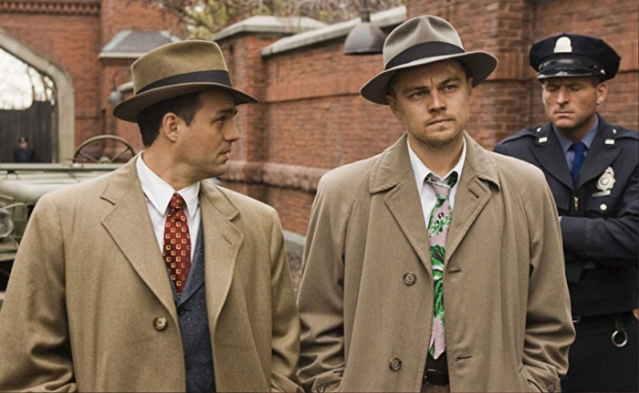

США, триллер, детектив, 2009

Еще один подарок для поклонников команды Скорсезе и ДиКаприо снят в 2009 году.
Захватывающий и мрачный детективный триллер "Остров проклятых" рассказывает о двух судебный приставах, отправленных расследовать дело об убийстве пациентки психиатрической лечебницы. Прибыв на место, один из них начинает видеть множество странностей не только в рассказах пациентов и докторов, но и в том, какие картинки выдает его собственное сознание.
На этот раз Лео ждала номинация на телевизионную премию Сатурн за лучшее исполнение мужской роли.
Рейтинг: IMDb 8.1, Кинопоиск 8.5